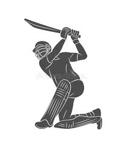
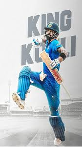

Back

 VIRAT KOHLI
Cricket is a bat-and-ball game played between two teams of eleven players. The objective is to score runs by hitting a ball bowled by the opposing team and then running between wickets. The fielding team aims to dismiss the batsmen and restrict their scoring.
Key aspects of the game:
Field:
Cricket is played on a large, oval-shaped field with a rectangular pitch in the center.
Wickets:
At each end of the pitch are wickets, which are three stumps with two bails on top.
Batting:
The batting team has two batsmen on the field at a time, whose aim is to hit the ball and score runs.
Bowling:
The bowling team aims to dismiss the batsmen and restrict their scoring by bowling the ball towards the wicket.
Scoring:
Runs are scored when batsmen run between the wickets after hitting the ball. They can also score boundaries (4 or 6 runs).
Dismissals:
Batsmen can be dismissed in various ways, including being bowled, caught, run out, etc.
Innings:
A match is divided into innings, with each team getting a turn to bat.
Variations:
Cricket has different formats like Test matches, One Day Internationals (ODIs), and Twenty20 (T20s).
Global Popularity:
Cricket is a popular sport, especially in countries like India, Australia, England, Pakistan, and the West Indies.
History and Development:
Cricket originated in England, with the first rules documented in 1744.
It was spread through British colonialism to various parts of the world.
The sport has evolved over time, with different formats and rules developing.